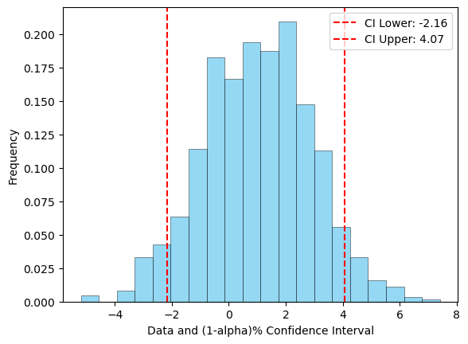
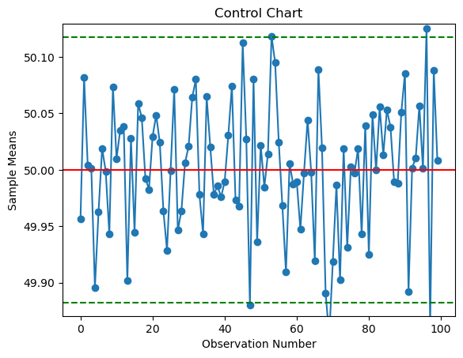
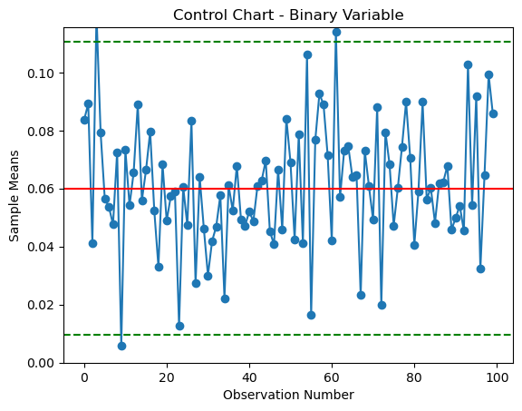

Plots
Show code cell content
#setup
import tprstats
import pandas as pd
import numpy as np
plot_3d_example = pd.read_excel("../data/Plot_3D_Example.xlsx", engine='openpyxl').dropna()
control_chart_data = pd.read_excel("../data/Theta_data.xlsx", engine='openpyxl').dropna()
control_cart_binary_data = pd.read_excel("../data/Defects_data.xlsx", engine='openpyxl').dropna()
Plot 3D Regression
tprstats.plot_3D('x', 'y', 'z', plot_3d_example)

Histogram and confidence interval for a sample of data
np.random.seed(10)
mu, sigma = 1, 2 # mean and standard deviation
rng = np.random.default_rng() # random number generator
data = rng.normal(loc=mu, scale=sigma, size=1000)
tprstats.hist_CI(data)

Control Charts
tprstats.control_chart(mu = 50, sig = 0.3, n = 25, alpha = 0.05, data = control_chart_data.XBAR)

Control Chart - Binary Variable
tprstats.control_chart_binary(p = 0.06, n = 85, alpha = .05, data = control_cart_binary_data.d_rate)
